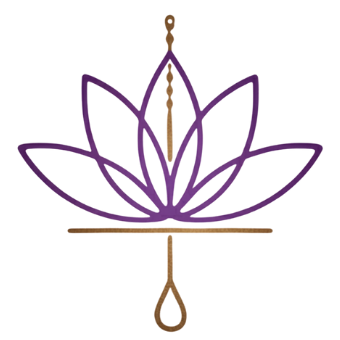
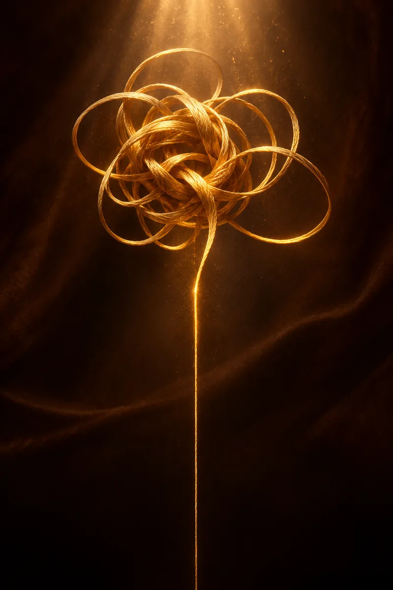
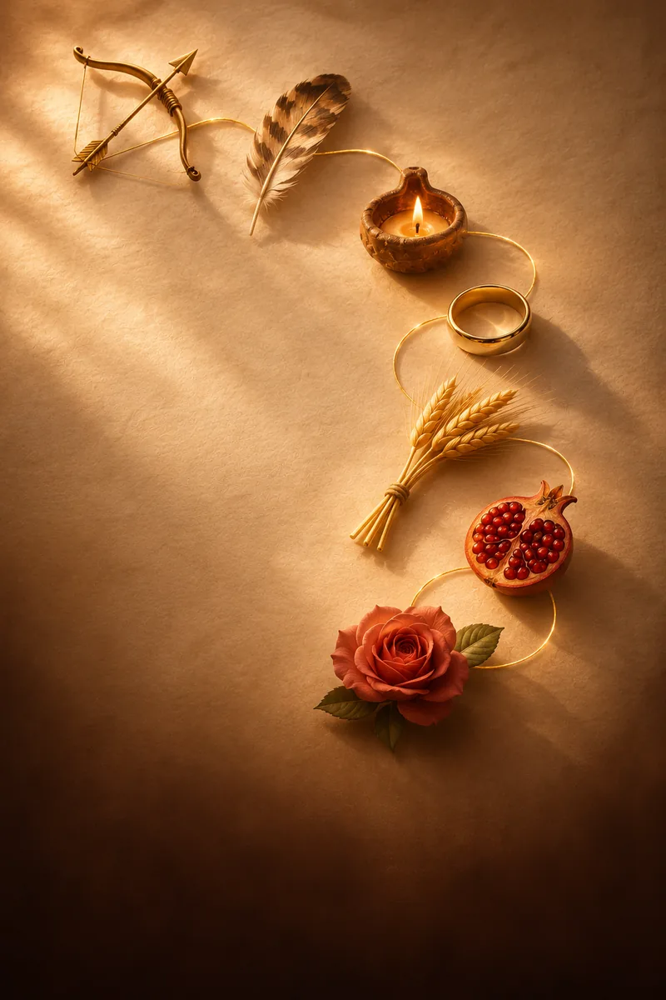

YasnnajáraAlves
Desenvolvimento humano · Quebra de padrões
Escolha por onde começar
NovidadeTexto da novidade da semana-

Online · 1 hora Consulta de quebra de padrões R$297 - Serviços Tratamentos energéticos Chakras, relações, família, carreira, ambientes e mais.
-

Método das DeusasComece grátis Primeiro Mapa das Deusas Qual deusa está no comando e qual ficou na sombra. - Transição de carreira Perfil de Mercado Lucrativo O seu nicho e o caminho até a primeira venda.
-


 Método das Deusas · R$ 9,99
E-books das deusas
Um guia de cada deusa, com práticas do dia a dia.
Método das Deusas · R$ 9,99
E-books das deusas
Um guia de cada deusa, com práticas do dia a dia.